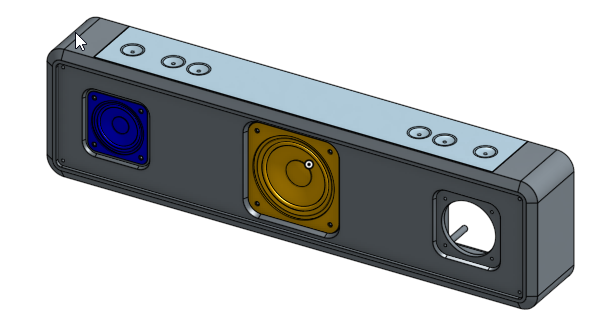
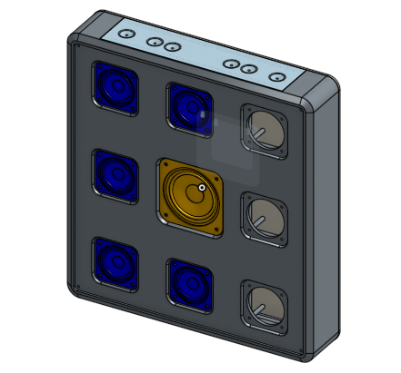

名稱：長版藍芽喇叭－如左圖（實體連結在這）
名稱：寬版藍芽喇叭－如右圖（實體連結在這）
課綱：利用onshape本身自上而下的設計，更改藍芽喇叭的模型，已達成以下兩種模型
★自上而下一詞代表，在不新增任何草圖或特徵下，將現在的模型改為課綱所需求的。所以非常吃重在繪製時的草圖先後順序，還有要能熟悉此圖的各個part！

左圖 右圖
＿＿＿＿＿＿＿＿＿＿＿＿＿＿＿＿＿＿＿＿＿＿＿＿＿＿＿＿＿＿＿＿＿＿＿＿＿
步驟解說
左圖：只要將藍色小喇叭的轉移功能之ㄌ座標向外移兩英吋即可完成。
★如果只有喇叭移動，而框架沒有跟著移動。那代表喇叭與框架的草圖沒有彼此約束，於是我們將喇叭孔的位置與小喇叭做同心共圓的約束，且確保在不標任何尺寸下線條是黑色的，再回頭來移動喇叭做測試，即可達成左圖模型！
右圖：需要更改草圖1、4、擠出5的特徵功能，並且多加入4個小喇叭零件，即可。
★我們在繪製此模型時，多利用於線性排列與鏡射功能，這樣一來能減少尺寸的標註，還有時間上的耗費。